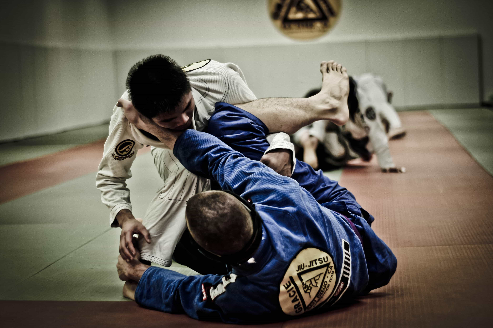
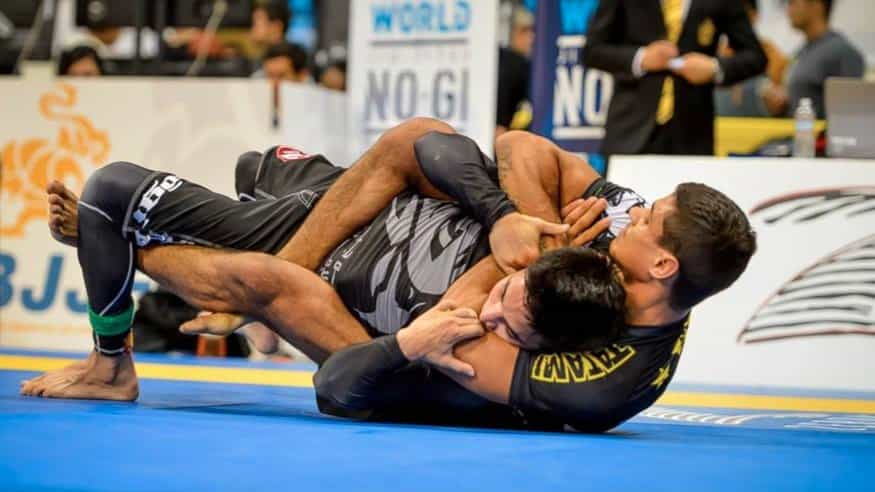
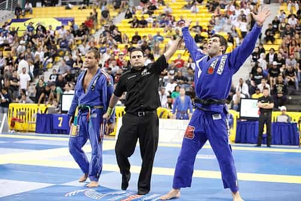

Ron Briggs enjoys the process of developing his character, mind and body.


There are a number of legitimate combat sports to choose from and I understand that BJJ is not the holy grail of fighting. I think that there are many strong sports that can teach you similar lessons including wrestling, judo, boxing, Muay Thai, etc. With that said, BJJ is very good, my largest experience is with BJJ and so I chose to use that to share the following benefits of combat sports in general.
Your first three months to a year of training BJJ will be spent getting smashed. You will be submitted by all types of people: guys bigger and smaller than you, guys younger and older than you, “nerds” and maybe even the occasional female. This is natural and anyone who starts training any combat sport, especially Brazilian jiu jitsu, will go through this learning period.
I remember having my guard passed by a 100 pound female early in my training and it was extremely humbling. Before training jiu jitsu I had a tendency to judge people’s fighting ability by the way they looked; if you were bigger and stronger I assumed you were a better fighter. Now I understand that while strength certainly helps, people of all shapes and sizes must be equally respected.
Alongside humility you will gain an appreciation for high-level combat athletes. You will understand that there are people out there who can take your life using only their bare hands. The vast majority of people on earth have no idea how skilled a tiny percentage of society is at fighting. Joe Rogan talks about this topic in the following short video:
You will become more comfortable dealing with discomfort. Being hot and thirsty while dealing with the claustrophobia of having another person smother you is uncomfortable. Over time you will get better at keeping your composure and thinking your way out of a situations which leads to the next point.

Jiu jitsu is problem solving. Joe Rogan calls fighting “problem solving with severe consequences”. While jiu jitsu is not fighting as there is no striking, it certainly does involve problem solving. You have to think your way out of and into a variety of different positions. As you improve your game and gain more experience these thoughts become reactions. Nonetheless problem solving will always be a part of jiu jitsu as you encounter different opponents who play different styles and unique games that you must deal with.
It takes discipline to train BJJ consistently especially early on while you’re spending the majority of your time as the nail rather than the hammer. While jiu jitsu is enjoyable to learn, there will be days when you don’t feel like training, are tired or busy. These will be the days that you must have the discipline to stick to your routine and push through to train.

If there is technique involved in something as physical as grappling then there must be technique involved in all things. This was a great lesson I learned early on while training. I ignorantly thought that strength and size were the most important factors when grappling but BJJ taught me that good technique wins in most situations. My mindset when doing any activity now is “what’s the most efficient way to do this that will require the least amount of energy?” While this may sound like common sense, BJJ helped reinforce this concept of efficiency in other activities.
Alongside technique I learned that all aspects of our lives are improvable. Again this may seem very basic but if you can improve at fighting by consistently training then that rule must apply to all other areas of life. The improvements you make in your first few years of consistent training are astonishing and this practice can be transferred over to other areas of life.

After getting humbled for a period of time you begin to improve considerably. With this improvement comes a confidence in your ability to handle yourself in different situations. I’m not saying that BJJ is the be-all and end-all of fighting, far from it, but I do believe learning to grapple makes for a great base. With this base comes confidence.
This does not mean I walk around looking for a fight, quite the opposite. I’m much less likely to fight anyone today than I was a decade ago for a variety of reasons.
Entering tournaments can cause anxiety for competitors and this, like anything uncomfortable, can be a great learning experience. You control your training, your effort and your attitude. You do not control your opponent, the referee or fortune. This applies to many areas of life where we must understand what we do and do not control. You learn to do your best with what you control and let fortune have her say.
On a related note, I once entered a tournament at the lightest weight class that I had fought in. I was strong, well-conditioned and as technical as I had ever been. Nevertheless, I came across my toughest opponent to date (the eventual division winner) in the first round and I was dominated. Fortune has her say in all matters, some things in life we don’t control.

Alongside what you do and do not control, competition teaches you what you can and cannot accept. Getting beat by a physically better opponent is acceptable, quitting while you’re getting dominated in a match or training is not. Failure in life is natural but allowing that to keep you down or to affect your next move should not be tolerated.
Lastly, l would like to note that if you’re not committed to training BJJ and don’t make time for it then you will not stick with it. It is challenging to train consistently and you have to be mentally determined to do it. Some academies offer beginner classes and these can be helpful to avoid being thrown to the wolves too soon. Either way, sooner or later, you must understand that you will be the nail. You have to remember there will always be someone better than you, even as you progress. If you have the commitment and can accept these factors then BJJ, or another combat sport, can make for a great teacher in your life.
Read More: 5 Reasons Why It’s Important To Have A Training Partner